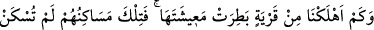
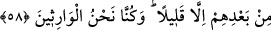
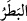
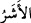

mukaddes Kâbe ve ünsiyet haremidir. Zât ve sıfâtın bütün ağaçlarının meyvaları
toplanıp oraya getirilir. Kim muhabbet ve ittibâ ile bu hareme girerse, her iki dünyanın
âfetlerinden emin olur ve her iki âleme hak nazarı ile bakar. Allah’ın velî kullarından
birinin kalbine giren kimsenin de hâli böyledir.
Hâfız der ki:
Saâdet hazinesinin anahtarı, gönül ehline makbul olmaktan ibarettir
Sakın ola ki kimse bu hususta şek ve şüphe etmesin
Burada şu hususa da işâret vardır: Nefis, enâniyet arzında ulûhiyet cezbeleriyle
çiğnenmekten korkar. Kalb mesabesindeki Muhammed (s.a.)’e tâbî olsa, ulûhiyet
hareminde rûhânî ve cismânî her türlü meyvanın hakîkatlarine ve her arzuyu
karşılayacak lezzetlere ulaşır. Ancak o, ledûnnî rızkın zevkini kemâliyle bilemez; bir
çok ulemânın bu zevki bilemediği gibi. Çünkü onlar bunu tatmamışlardır. Tatmayan
bilmez.
Kemâl Hucendî der ki:
Zâhid senin aşkından sakınırsa buna şaşmamak gerek
Bu şarabın lezzetini tatmayan ne bilsin ki?
Sonra Allah Teâlâ, işin aslının böyle olmadığını beyan etti. Yâni onların gerçekte
insanlardan korktuklarını ve Allah’ın azâbından ise emin olduklarını açıkladı. Halbuki
onlara asıl gerekli olan, bulundukları halden dolayı Allah’ın azâbından korkmaları,
insanlardan ise çekinmeyip emin olmalarıdır. Ve Allah Teâlâ devamla buyurdu ki:
58. Biz, refahından şımarmış nice memleketi helâk etmişizdir. İşte yerleri!
Kendilerinden sonra oralarda pek az oturulabilmiştir. Onlara biz vâris olmuşuzdur.
“Biz, refahından şımarmış nice memleketi helâk etmişizdir.”
“__WORD__, nimet içinde şımarmak, çok sevinmek, azıtmak ve taşkınlık yapmak anlamlarına
gelir. Bazıları demiştir ki: “__WORD__ ve “__WORD__ aynı mânâya gelir. Nimeti kötü yollarda
kullanmak, hakkını vermemek ve uygun olmayan yerlere harcamaktan dolayı insana arız
olan bir şaşkınlık hâlidir. Nitekim el-Vasît’de bu şekilde kaydedilmiştir.
Yani, Mekke halkı gibi nice emniyet ve refah içinde yaşayan memleketler vardır ki